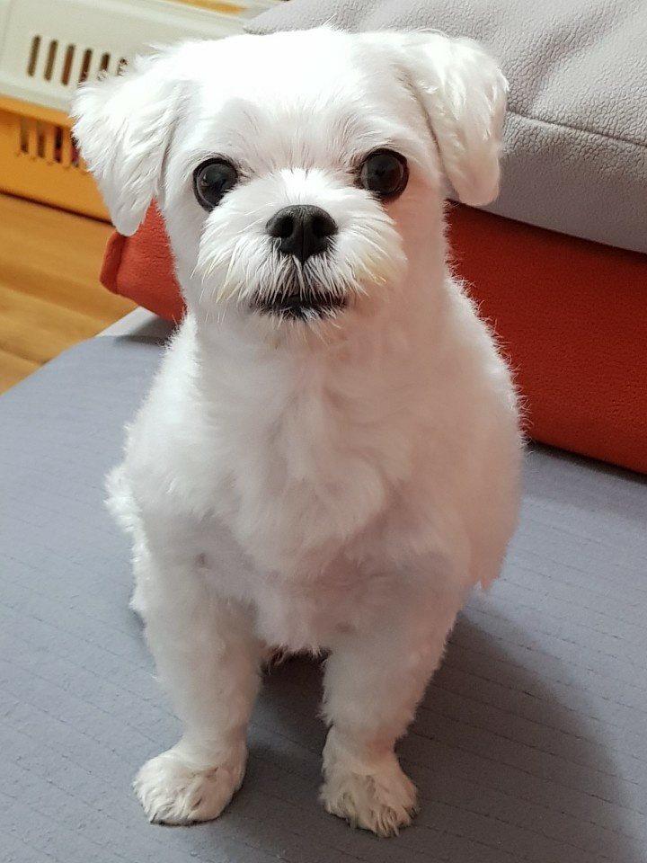

<!DOCTYPE html>
<html>
<head>
	<meta charset="utf-8">
	<title>다음 지도 API</title>
    <script src="//dapi.kakao.com/v2/maps/sdk.js?appkey=e7b05eecf67803b64bde6793577015c0"></script>
	<script type="text/javascript" src="//dapi.kakao.com/v2/maps/sdk.js?appkey=e7b05eecf67803b64bde6793577015c0&libraries=services,clusterer,drawing"></script>
	<script src="hangul.js" type="text/javascript"></script>
	<style>
		#aside_bar{
			display: inline-block;
			width: 200px;
			height: 200px;
			position: fixed;
			margin-top: 10px;
			border: 2px solid black;
        }
        .bar{
        	display: block;
        	padding: 10px; 
        }
		#map{
			border: 2px solid black;
		}
		.info .title {padding: 5px 0 0 10px;height: 30px;background: #eee;border: 1px solid #ddd; font-size: 18px;font-weight: bold;}
		.info .body {position: relative;overflow: hidden;}
		.info .link {position: relative;margin: 10px 5px 10px 70px; height:50px; }
		.info .img {position: absolute;top: 6px;left: 5px;border: 1px solid #ddd;color: #888;overflow: hidden;}
		.info .tag {position: relative; margin: 10px; }
		.info .link a{padding: 6px;}
	</style>
</head>
<body>
	<div id="aside_bar">
		<aside>
			<form>
				<div class="bar">
					<h2>
						Guide Search
					</h2>
				</div>
				
				<div class="bar">
					<label for="search">검색</label>
					<input type="text" id="search">
				</div>

				<div class="bar">
					<button>Filter results</button>
				</div>
			</form>
		</aside>
	</div>
	<div id="map" style="width:80%;height:800px;margin-left:250px;"></div>
    
	<script>

		var mapContainer = document.getElementById('map'), // 지도를 표시할 div 
		    mapOption = {
		        center: new kakao.maps.LatLng(37.56966, 126.97897), // 지도의 중심좌표
		        level: 5, // 지도의 확대 레벨
		        
		    }; 
		
		// 지도를 생성한다 (자기 기준)
		var map = new kakao.maps.Map(mapContainer, mapOption); 
      
        if(navigator.geolocation){
            navigator.geolocation.getCurrentPosition(function(position){
                var lat=position.coords.latitude;
                var lon=position.coords.longitude;
                var my_position=new kakao.maps.LatLng(lat,lon);
				map.setCenter(my_position);
				var data="내 위치";
				
				var markerImage = new kakao.maps.MarkerImage(
    				'https://t1.daumcdn.net/localimg/localimages/07/mapapidoc/red_b.png',new kakao.maps.Size(31, 35), new kakao.maps.Point(13, 34));
                var marker = new kakao.maps.Marker({
		        	position: my_position,
					image: markerImage, // 마커의 좌표
		        	map: map // 마커를 표시할 지도 객체
		   		});
				   
				var infowindow = new kakao.maps.InfoWindow({
		        content : '<div style="padding:5px;">'+data+'</div>', // 인포윈도우에 표시할 내용
                removable : true
            	});
				kakao.maps.event.addListener(marker,'mouseover',function(){
					infowindow.open(map, marker);
				});
				kakao.maps.event.addListener(marker, 'mouseout', function() {
    				infowindow.close();
				});
				
            });
        }
		var markers=[];
        function displayMarker(my_position,person,chat,tag){
			
            var marker = new kakao.maps.Marker({
		        position: my_position, // 마커의 좌표
		        map: map // 마커를 표시할 지도 객체
		    });
			marker.setMap(map);
			markers.push(marker);
			var tag_list=[];
			for(let i=0;i<tag.length;i++){
				tag_list.push("#"+tag[i]);
			}
			for(let i=0;i<tag_list.length;i++){
				//console.log(tag_list[i]);
			}
            // 마커 위에 표시할 인포윈도우를 생성한다
		    var infowindow = new kakao.maps.InfoWindow({
		        content : '<div>'+
							'<div class="info">'+
								'<div class="title">'+
								person+
								'</div>'+
								'<div class="body">'+
									'<div class="img">'+
										''+
									'</div>'+
									'<div class="link">'+
										'<a href="/info.html">'+
											''+
										'</a>'+
										'<a id="channel-chat-button" href="'+chat+'">'+
											''+
										'</a>'+
									'</div>'+
									'<div class="tag">'+
										'<p>'+tag_list+'</p>'+
									'</div>'+	
								'</div>'+
							'</div>'+
						'</div>', // 인포윈도우에 표시할 내용
                removable : true
            });
			var click_info=function(event){
				infowindow.open(map, marker);
			}
			kakao.maps.event.addListener(marker,'click',click_info);
			
        }
		//여러개 마커 표시 기능
		fetch('guide.json')
		.then(function(response){
			return response.json();
		}).then(function(json){
			let guide = json;
			//console.log(json);
			initialize(guide);
		}).catch(function(err){
			console.log('Fetch problem: '+err.message);    
		});

		function initialize(guide){
			
  			const searchBtn = document.querySelector('button');
 
			let lastSearch=' ';
			
			let finalGroup;

			finalGroup=guide;
			updateDisplay();

			
			searchBtn.onclick=search;

			function search(e){
				
				e.preventDefault();
				finalGroup=[];
				var lastSearch=document.getElementById("search").value;
				
				if(lastSearch===''){
					finalGroup=guide;
					update();
				}else{
					for(let i=0;i<guide.length;i++){
						for(let j=0;j<guide[i].tag.length;j++){
							//console.log(guide[i].tag[j]);
							if(Hangul.search(guide[i].tag[j],lastSearch)!==-1){
								finalGroup.push(guide[i]);
							}
						}
					}
					for(let i=0;i<finalGroup.length;i++){
						//console.log(finalGroup[i].name);
					}
					update();
				}
				
			}
			function update(){
				for(let i=0;i<markers.length;i++){
					markers[i].setMap(null);
				}
				markers=[];
				updateMap();
				updateDisplay();
			}
			function updateMap(){
				map = new kakao.maps.Map(mapContainer, mapOption); 
				if(navigator.geolocation){
            	navigator.geolocation.getCurrentPosition(function(position){
                var lat=position.coords.latitude;
                var lon=position.coords.longitude;
                var my_position=new kakao.maps.LatLng(lat,lon);
				map.setCenter(my_position);
				var data="내 위치";
				
				var markerImage = new kakao.maps.MarkerImage(
    				'https://t1.daumcdn.net/localimg/localimages/07/mapapidoc/red_b.png',new kakao.maps.Size(31, 35), new kakao.maps.Point(13, 34));
                var marker = new kakao.maps.Marker({
		        	position: my_position,
					image: markerImage, // 마커의 좌표
		        	map: map // 마커를 표시할 지도 객체
		   		});
				   
				var infowindow = new kakao.maps.InfoWindow({
		        content : '<div style="padding:5px;">'+data+'</div>', // 인포윈도우에 표시할 내용
                removable : true
            	});
				kakao.maps.event.addListener(marker,'mouseover',function(){
					infowindow.open(map, marker);
				});
				kakao.maps.event.addListener(marker, 'mouseout', function() {
    				infowindow.close();
				});
				
            });
        }
			}
			function updateDisplay(){
				
				for(let i=0;i<finalGroup.length;i++){
					var person=finalGroup[i].name;
					var lat=finalGroup[i].latitude;
                	var lon=finalGroup[i].longitude;
					var chat=finalGroup[i].chat;
					var tag=finalGroup[i].tag;
					console.log("<p>"+person+"</p>");
					var my_position=new kakao.maps.LatLng(lat,lon);
					var marker = new kakao.maps.Marker({
		        		position: my_position, // 마커의 좌표
		        		map: map // 마커를 표시할 지도 객체
		    		});
					
					displayMarker(my_position,person,chat,tag);
				}
			}
		
		}
		
		


		// 지도에 확대 축소 컨트롤을 생성한다
		var zoomControl = new kakao.maps.ZoomControl();

		// 지도의 우측에 확대 축소 컨트롤을 추가한다
		map.addControl(zoomControl, kakao.maps.ControlPosition.RIGHT);

		
	
	</script>

</body>
</html>